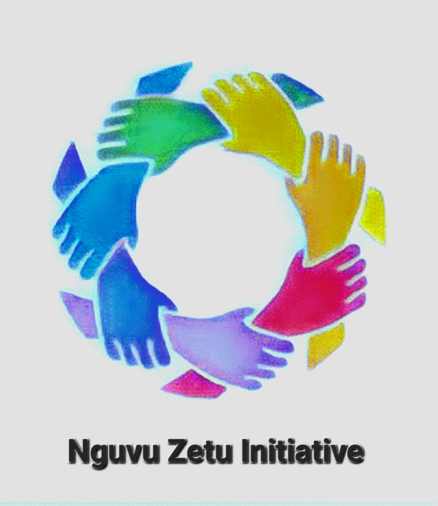

Info about us.

Empowering minds,Building connections
WHO WE ARE
At Nguvu Zetu Initiative, we're dedicated to transforming lives through the power of mindset training and fostering meaningful connections. We equip individuals with the tools and techniques needed to unlock thier full potential and connect them with like minded peers on a journey of personal growth. Join us as we embark on a transformative journey of self discovery and community building.
VISION
"To create a world where individuals possess empowered mindsets, fostering personal growth and positive change, while fostering strong connections among like minded individuals"
MISSION
Our mission is to provide transformative mindset traning and create a supportive community that connects individuals who share common aspirations and values. We aim to empower people to unlock their full potential, enhance their mental wellbeing, and build meaningful relationships. Through innovative programmes resources and events we foster a culture of continous self improvement, empathy and collaboration, ultimately contributing to a more harmonious and thriving global society
BACKGROUND INFORMATION
Nguvu Zetu Initiative was birthed by a young lady passionate to help the youth change their mindset because she believed that anything is possible and and can be done if one is willing to do it. It started as it was observed that the majority in Uganda were in the young and youth bracket, idle and unemployed and therefore it was a drive to extend a hope for sustainability in the future to come.This was an initiative to empower the young people alike. In Nguvu Zetu we derive our strength from our passion as an individuals
OBJECTIVES
- Foster Positive Mindset Development: To facilitate personal growth and well-being by offering programs and resources that help individuals develop a positive and growth-oriented mindset.
- Facilitate Personal Transformation: To empower individuals to transform their lives by providing tools, guidance, and support for improving their mindset and overall mental well-being.
- Create a Supportive Community: To establish a vibrant community where like-minded individuals can connect, share experiences, and support each other in their journey toward personal growth and mindset development.
- Promote Lifelong Learning: To encourage continuous learning and self-improvement by offering educational content, workshops, and events that expand individuals' knowledge and skills related to mindset development.
- Enhance Emotional Resilience: To equip individuals with strategies and techniques for building emotional resilience, enabling them to navigate life's challenges with greater strength and positivity.
- Foster Collaboration: To connect individuals with similar goals and interests, fostering collaboration and the sharing of ideas and experiences among community members.
- Measure and Assess Impact: To continuously evaluate the effectiveness of our programs and community initiatives, ensuring that they positively impact the mindset and well-being of the individuals we serve.
- Expand Outreach: To broaden our reach and engage with a diverse audience, ensuring that more individuals have access to the resources and support needed for mindset development.